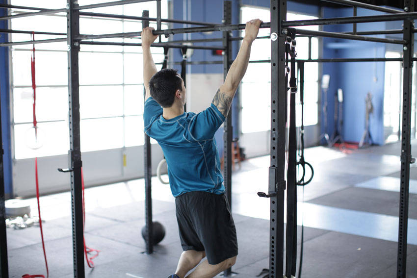

- Take a pronated grip on a pull-up bar.
- From a hanging position, raise yourself a few inches without using your arms. Do this by depressing your shoulder girdle in a reverse shrugging motion.
- Pause at the completion of the movement, and then slowly return to the starting position before performing more repetitions.